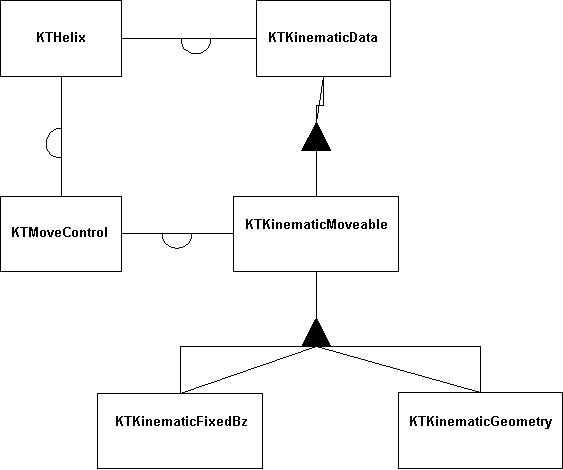

The Base Track Classes in CLEO3
Introduction
This document provides an overview of the basic track classes used in CLEO3 from which all other classes inherit. The class diagram is shown below.

The class KTHelix contains the basic helix information per hypothesis which is stored on disk or tape. The KTKinematicData, etc. classes deal with kinematic information such as momentum and position. Kinematic information is normally obtained from the helix parameters using the appropriate constructors.
List of classes
- KTHelix (figure) describes the helical path traversed by a charged particle in a solenoidal B field (B along z direction). You can think of a helix as the path traced by a particle moving in a circle in the XY plane while the circle moves at constant velocity along the z-axis. The helix is described by five parameters defined relative to a "reference point" (xr,yr,zr) plus the 5x5 covariance matrix.
- KTKinematicData (figure) describes kinematic properties of charged tracks, photons, and virtual particles such as pi0, Ks, Lambda, D0, etc., so that a user can carry out standard operations such as calculating masses, adding 4-momenta together, etc. The basic information consists of the 3-momentum, 3-position, mass and charge. A 7x7 error matrix is stored for the quantities (Px,Py,Pz,E,x,y,z).
- KTKinematicMoveable (figure) inherits directly from KTKinematicData and acts as the base class for all classes that move kinematic type objects. Since there is no specification of a magnetic field or material geometry in this class, all public move routines defined here are pure virtual functions, which means that KTKinematicMoveable is an abstract class and no objects of its type can be instantiated. Classes that inherit from KTKinematicMoveable must provide the required move functions.
- KTKinematicFixedBz (figure) objects can be moved through a constant solenoidal B field. This class inherits directly from KTKinematicMoveable.
- KTKinematicGeometry
is not defined yet. It will eventually allow tracks to be moved through a field map and material, probably with the help of the GEANT routines.
- KTMoveControl (figure) is a helper class. KTHelix and KTMoveable (and its descendents) use it in situations that require iterative movement to reach a desired point, such as the intersection with an arbitrary plane or the point of closest approach to a stereo wire. In that case, the helix is approximated by a parabola and the track is swum towards the final point in a series of steps. The maximum step size, the direction of the steps and the convergence of the iteration process are controlled by KTMoveControl.
Paul Avery
<avery@phys.ufl.edu>
$Id: basetracks.html,v 1.1 1998/05/27 17:06:00 avery Exp $